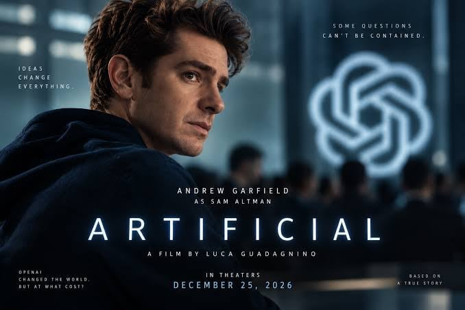
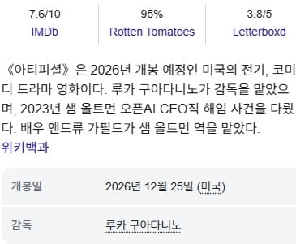
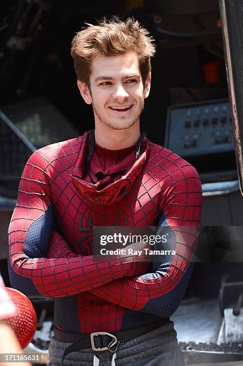
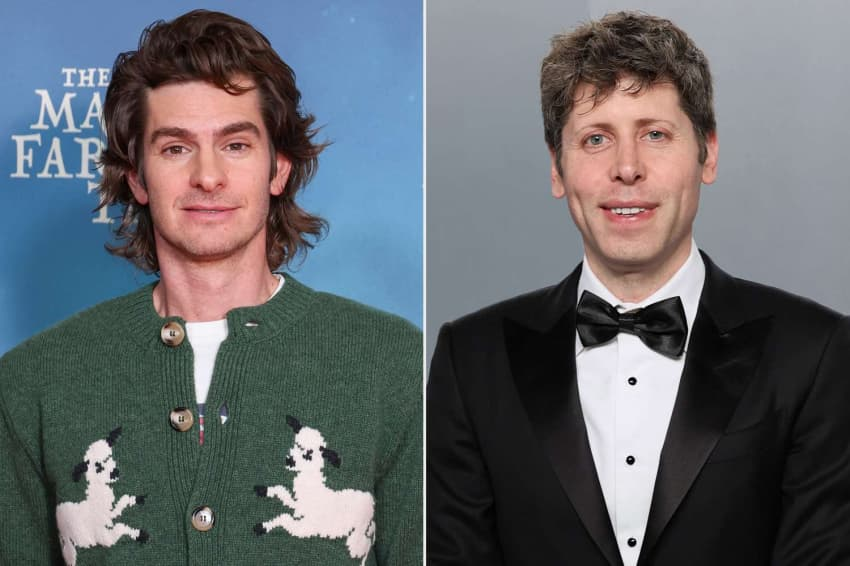
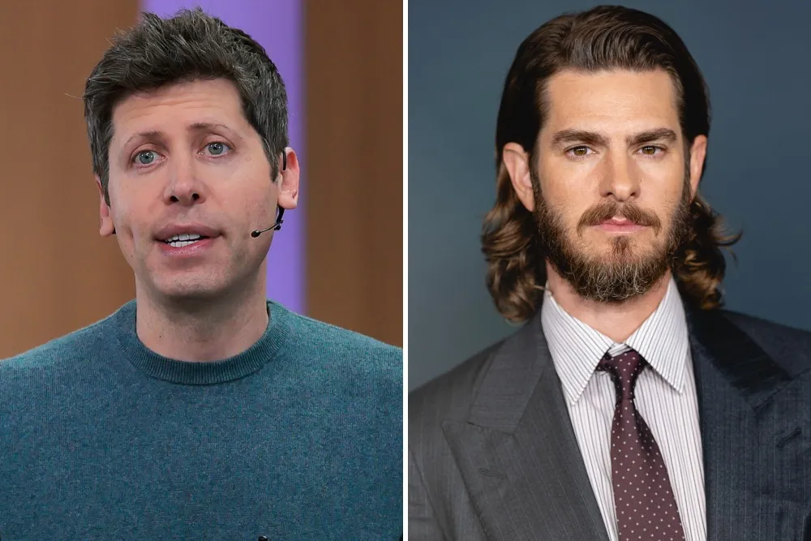
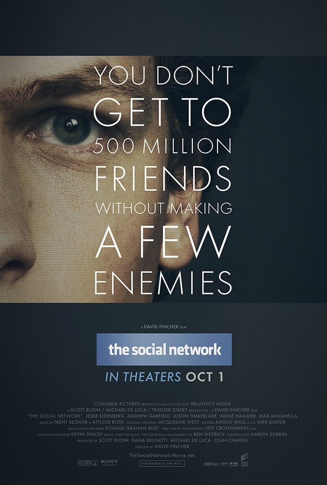
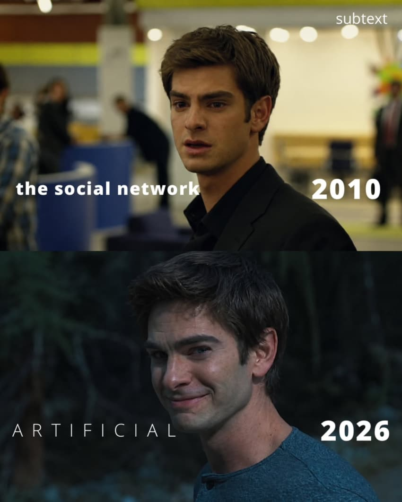
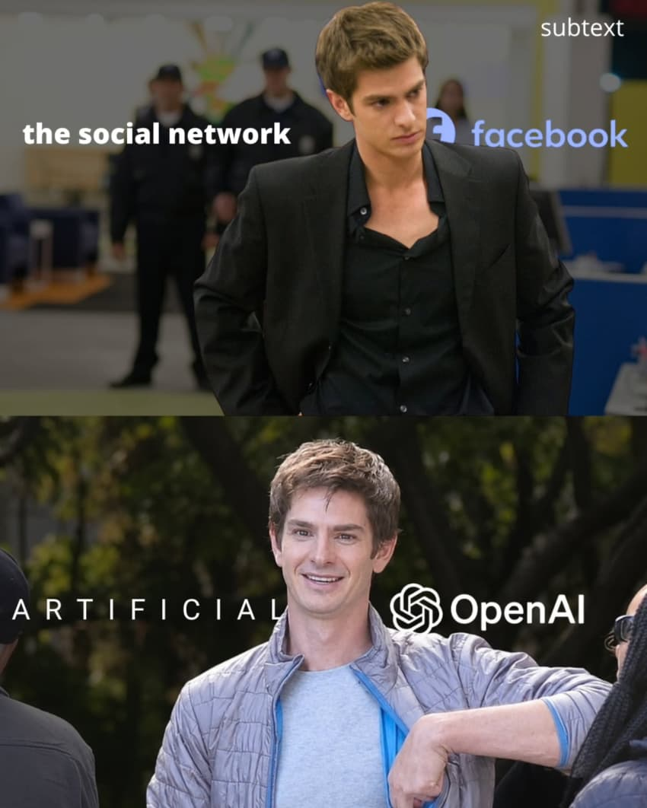

샘 알트만 해고 사태를 다룬 신작 영화
'artificial'


뉴욕 영화제에서 제한 상영을 했는데
관객들과 평론가들의 반응이 폭발적이라서
2027년 개봉 예정일을 올해로 바꿨을 정도라고 함

실존 인물 샘 알트먼을 연기 하는 주연 배우는
스파이더맨 역할로 유명 해지고
지금은 연기파로 인정 받는 앤드류 가필드 라고 함


가필드는 샘 알트만 특유의 걸음과 말투와 표정을
연구 하는데 많은 노력을 기울였다고 함



특히 가필드는 2010년에는
영화 '소셜 네트워크' 에서 페이스북 만들었다가
마크 주커버그 한테 팽 당한 실존 인물을
연기 했었는데 2026년에는 새로운 AI 시대의
비슷한 인물을 다시 연기 하게 됐다고 함..
딱보자마자 소셜 네트워크 생각났는데 ㅋㅋㅋㅋ빅테크 창업자 전문 배우냐고 ㅋㅋㅋㅋ